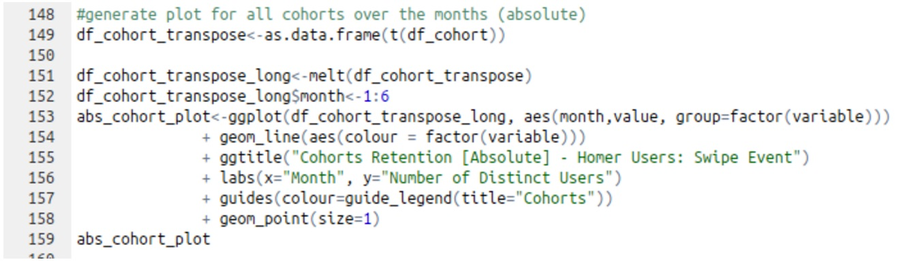

Analyzing Bose SoundTouch App Users and Implementing Data Collection Events (Bose Corporation)
- Utilized Hue to query SoundTouch app data from the Hadoop cluster.
- Coded in R to analyze SoundTouch app data - user retention rates, app flow path, etc.
- Coded in Javascript to implement data collection commands within the SoundTouch app.
- Utilized Chrome DevTools and Android Studio for app debugging and building purposes.
Displayed below are graphs and snippets of code that I produced when analyzing active SoundTouch app desktop users.
|

Cohort Graph R Code |
Analyzed Different Genes in the Human Genome (Boston Children's Hospital)
- Analyzed half life trends and decay constants of different genes.
- Filtered large sets of gene expression and splicing data and generated heatmaps of protein splicing patterns with R.
- Parsed HTML, XML, and FASTA files in order to generate readable FASTA files for analyzing sequences.
- Developed datasets from iCLIP data using BLAST module.